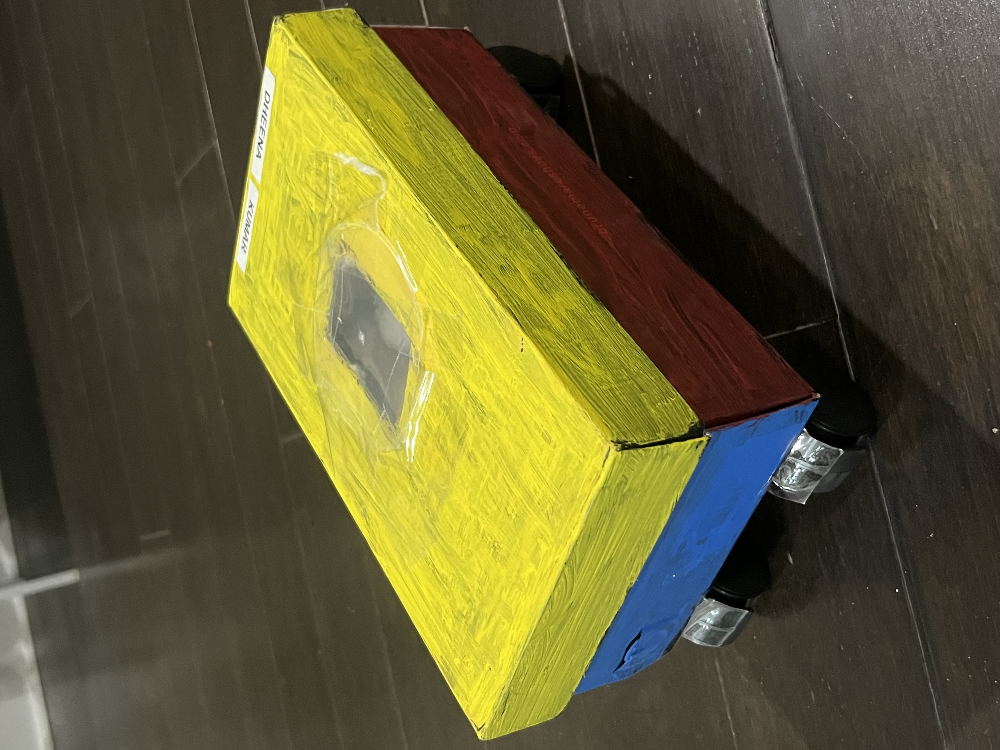
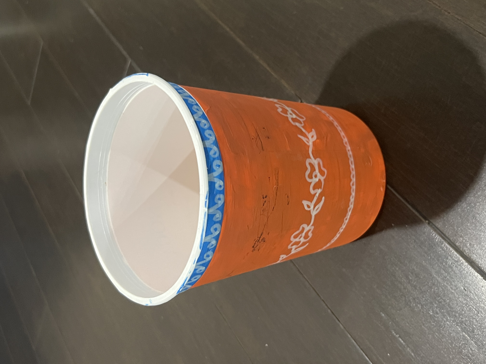

Every single day, millions of tons of toxic waste and emissions are released into our air, water, and soil. It's time to wake up and clear the air.
Understand the ImpactSmog, greenhouse gases, and toxic chemicals are pumped into the atmosphere daily by factories and vehicles. This creates a blanket of toxicity that traps heat and destroys the air we breathe.
Industrial waste, plastic dumps, and agricultural runoff contaminate our rivers and oceans. By 2050, there could be more plastic in the ocean than fish.
Excessive use of chemical fertilizers, pesticides, and poor waste management seeps hazardous chemicals into the earth, destroying arable land and poisoning our food supply.
Air pollution is linked to asthma, lung cancer, and cardiovascular diseases. The WHO estimates that 7 million people die prematurely every year due to exposure to polluted air.
Greenhouse gas pollution traps heat in the atmosphere, accelerating global warming. This leads to extreme weather events, rising sea levels, and the destruction of natural habitats.
Toxic chemicals in waterways cause mass die-offs of aquatic life. Oil spills destroy marine ecosystems, and deforestation for industrial growth displaces millions of animal species.
Pollution costs the global economy trillions of dollars annually. These costs stem from healthcare expenses, lost labor productivity, and the destruction of agricultural yields.
Before throwing items into the trash, think about how you can give them a second life. Upcycling reduces landfill waste and is a fun, creative way to make practical items out of everyday garbage!

Don't toss out old shoe boxes! With a little creativity, they make perfect rolling toys for kids.

Plastic containers take hundreds of years to decompose. Instead of tossing them out, use them to grow life.
We cannot wait for governments and corporations to act alone. Change starts at home. By making small, conscious choices every day, we can drastically reduce our footprint.
Say no to single-use plastics. Recycle properly, try DIY upcycling, and compost organic waste.
Use public transport, carpool, bike, or walk to reduce vehicle emissions.
Turn off lights, switch to LED bulbs, and support renewable energy sources.